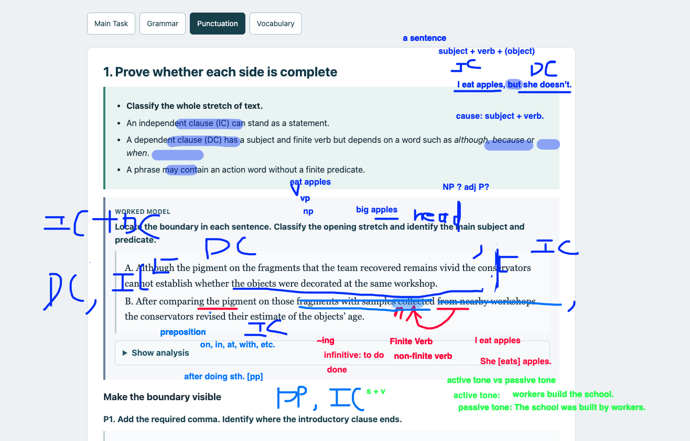

Sentence Boundaries · Class Notes
Class 01 · 15 September 2026
- Review the sentence knowledge covered in Class 01.
- Revisit the original worked model and class annotations.
- Use the separate homework sheet for practice.
1. Find the finite core
- A finite verb anchors a clause in tense or modality. It may be one word or part of a verb phrase: revised, was revised, has been revised, can revise.
- Non-finite forms include comparing, to compare and collected when it is a participle. They do not by themselves supply a finite predicate.
- The same spelling can have different jobs: collected can be a finite past-tense verb or a non-finite modifier. Read its role in the sentence.
- Keep required objects and complements when checking completeness. A subject and an action word alone are not always enough.
Active and passive
- Active: the subject performs the action — The researchers collected the samples.
- Passive: the subject receives the action — The samples were collected by the researchers.
- The samples collected yesterday is a noun phrase with a modifier, not a complete statement. The samples were collected yesterday has a finite predicate.
- An -ing form can be part of a finite predicate when an auxiliary is present: are comparing. Do not reject every -ing word automatically.
2. Separate the opening from the main clause
- An independent clause (IC) can function as a complete statement.
- A dependent clause (DC) may contain a subject and finite verb but still depend on the rest of the sentence: although the pigment remains vivid.
- An opening after + -ing expression does not become an IC simply because it names an action.
- For the long openings below: introductory DC / phrase + comma + IC. Read through embedded modifiers before placing the comma.
WORKED MODEL — Locate the boundary; classify the opening and identify the main subject and predicate.
A. Although the pigment on the fragments that the team recovered remains vivid the conservators cannot establish whether the objects were decorated at the same workshop.
B. After comparing the pigment on those fragments with samples collected from nearby workshops the conservators revised their estimate of the objects’ age.
Show analysis
- A. Although the pigment on the fragments that the team recovered remains vivid, the conservators cannot establish whether the objects were decorated at the same workshop.
- Opening DC: pigment / remains, introduced by although. That the team recovered modifies fragments. Main core: conservators / cannot establish; the whether-clause supplies what they cannot establish.
- B. After comparing the pigment on those fragments with samples collected from nearby workshops, the conservators revised their estimate of the objects’ age.
- Opening: After comparing..., with no finite predicate of its own. Collected... modifies samples. Main core: conservators / revised.
Show class annotations
Read the snapshot with these corrections
- I eat apples, but she doesn’t. Both sides are independent clauses. But coordinates them; doesn’t stands for doesn’t eat apples. The DC label over the second side should be IC.
- After comparing … is an introductory phrase with a non-finite verb form. In the worked model, it continues through nearby workshops; then the main clause begins with the conservators revised.
- Samples collected from nearby workshops contains a non-finite modifier. Compare The team collected the samples, where collected is the finite past-tense verb.
- Big apples is a noun phrase with apples as its head; eat apples is a verb phrase headed by eat.
- Use the terms clause and active/passive voice. Active: The workers built the school. Passive: The school was built by the workers.

3. Keep phrases and the main core together
- Find a phrase’s head: the central word around which the phrase is built. In the unusually vivid pigment, the head is pigment.
- Prepositions such as in, on, from, with and after introduce expressions that often identify place, time or another relationship. Keep the preposition with its complement.
- Temporarily bracket modifiers to see the structure; restore them when reading the meaning. Some modifiers and complements carry essential information.
- Do not put punctuation between a complete subject phrase and its main verb merely because the subject is long.
Moving an opening does not create a universal comma rule
- After comparing the samples, the researchers revised the date. The long introductory phrase takes a comma.
- The researchers revised the date after comparing the samples. The following integrated time phrase normally takes no comma.
- A following clause can still be supplementary or contrastive and take a comma: The researchers retained the date, although several colleagues disagreed.
- After the team compared the samples contains a finite clause; after comparing the samples contains a non-finite form. Inspect what follows after.
4. Join two complete clauses
- Prove both sides are independent before using an IC join.
- IC. IC. A period separates complete sentences. Their ideas may still be closely related.
- IC; IC. A semicolon joins closely related independent clauses.
- IC, and / but / so / yet IC. A comma plus a coordinating conjunction joins the clauses.
- A comma alone creates a comma splice. No boundary creates a fused sentence.
- But is a coordinating conjunction; it does not make a clause dependent. Although / because / when introduce dependent clauses in the patterns reviewed here.
A useful clarification
- The first team accepted the date, but the second did not. Both sides are independent; did not stands for did not accept the date. Repeated words may be omitted when the meaning is recoverable.
- Although the second team did not accept the date is dependent because of although.
- A sentence may contain a dependent expression inside a larger complete clause. Classify the whole stretch on each side of the proposed boundary.